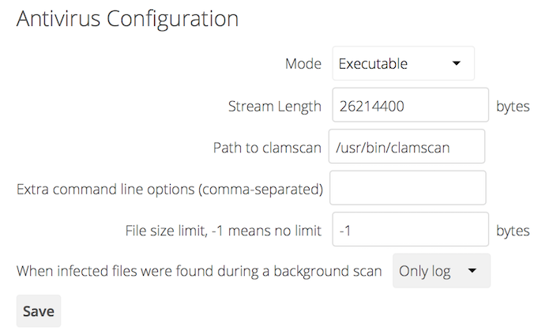

Virus Scanner Support¶
Overview¶
ClamAV is the only officially supported virus scanner available for use with ownCloud. It:
- Operates on all major operating systems, including Windows, Linux, and Mac
- Detects all forms of malware including Trojan horses, viruses, and worms
- Scans compressed files, executables, image files, Flash, PDF, as well as many others
What’s more, ClamAV’s Freshclam daemon automatically updates its malware signature database at scheduled intervals. However, other scanners can be used, so long as they:
- Can receive data streams via pipe on the command-line and return an exit code
- Return a parsable result on stdout
How ClamAV Works With ownCloud¶
Before you install and configure ClamAV, here is a bit of background which may be handy to know. ownCloud integrates with anti-virus tools by connecting to them via:
- A URL and port
- A socket
- Streaming the data from the command-line via a pipe with a configured executable
In the case of ClamAV, ownCloud’s Antivirus extension sends files as streams to a ClamAV service (which can be on the same ownCloud server or another server within the same network) which in turn scans them and returns a result to stdout.
Note
Individual chunks are not scanned. The whole file is scanned when it is moved to the final location.
The information is then parsed or an exit code is evaluated if no result is available to determine the response from the scan. Based on ownCloud’s evaluation of the response (or exit code) an appropriate action is then taken, such as recording a log message or deleting the file.
Note
Scanner exit status rules are used to handle errors when ClamAV is run in CLI mode. Scanner output rules are used in daemon/socket mode.
Things To Note¶
- Files are checked when they are uploaded or updated (whether because they were edited or saved) but not when they are downloaded.
- ownCloud doesn’t support a cache of previously scanned files.
- If the app is either not configured or is misconfigured, then it rejects file uploads.
- If ClamAV is unavailable, then the app rejects file uploads.
- A file size limit applies both to background jobs and to file uploads.
Configuring the ClamAV Antivirus Scanner¶
You can configure your ownCloud server to automatically run a virus scan on newly-uploaded files using the Antivirus App for Files.
Note
ClamAV must be installed before installing and configuring Antivirus App for Files.
Installing ClamAV¶
As always, Linux distributions install and configure ClamAV in different ways. Below you can find the instructions for installing it on Debian or Red Hat-based distributions.
Debian, Ubuntu, Linux Mint¶
On Debian, Ubuntu, and their many variants, install ClamAV with the following command:
sudo apt-get install clamav clamav-daemon
This automatically creates the default configuration files and launches the clamd and freshclam daemons.
You shouldn’t have to do anything else, though it is a good idea to review the ClamAV documentation, as well ClamAV’s settings in /etc/clamav/.
Red Hat 7 and CentOS 7¶
On Red Hat 7 and related systems, you must install the “Extra Packages for Enterprise Linux (EPEL)” repository, and then install ClamAV. To do so, run the following commands:
yum install epel-release
yum install clamav clamav-scanner clamav-scanner-systemd clamav-server
clamav-server-systemd clamav-update
Note
Regardless of your operating system, we recommend that you enable verbose logging in both clamd.conf and freshclam.conf until you get any kinks with your ClamAV installation worked out.
Configuring and Running ClamAV¶
After installing ClamAV and the related tools, you will now have two configuration files: /etc/freshclam.conf and /etc/clamd.d/scan.conf.
You must edit both of these before you can run ClamAV.
Both files are well commented.
Running either man clamd.conf or man freshclam.conf will provide detailed information on all the available configuration options.
Note
Refer to /etc/passwd and /etc/group when you need to verify the ClamAV user and group.
When you’re finished editing the configuration files, you must enable the clamd service file and start clamd.
You can do so using the following commands:
systemctl enable clamav-daemon.service
systemctl start clamav-daemon.service
That should take care of everything.
Note
Enable verbose logging in scan.conf and freshclam.conf until it is running the way you want.
Automating ClamAV Virus Database Updates¶
To update your malware database and get the latest malware signatures, you need to run freshclam frequently.
Do this by running freshclam or sudo freshclam on Debian-based distributions.
We recommend you do this, post-installation, to download your first set of malware signatures.
If you want to adjust freshclam’s behavior, edit /etc/clamav/freshclam.conf and make any changes you believe are necessary.
After that, create a cron job to automate the process. For example, to run it every hour at 47 minutes past the hour, add the following in the applicable user’s crontab:
# m h dom mon dow command
47 * * * * /usr/bin/freshclam --quiet
Note
Please avoid any multiples of 10, because those are when the ClamAV servers are hit the hardest for updates.
Install the Anti-Virus App¶
The Anti-Virus app needs to be installed from the ownCloud Market, under “Security”. You can access the ownCloud Market via the App Menu (or App Switcher).
Configuring ClamAV within ownCloud¶
Once it is installed, go to your ownCloud Admin page and set your ownCloud logging level to Everything.
Now, navigate to Settings -> Admin -> Security, where you’ll find the “Antivirus Configuration” panel.
There, as below, you’ll see the configuration options which ownCloud will pass
to ClamAV.
Configuration Warnings¶
The Antivirus App for Files will show one of three warnings if it is either misconfigured, or ClamAV is not available. You can see an example of all three below.
Mode Configuration¶
ClamAV runs in one of three modes: Daemon (Socket), Daemon, and Executable.
Daemon (Socket)¶
In this mode, ClamAV runs in the background on the same server as the ownCloud installation.
When there is no activity clamd places a minimal load on your
system.
However, if your users upload large volumes of files, you will see high CPU usage.
Please keep this in mind.
ownCloud should detect your clamd socket and fill in the Socket field.
This is the LocalSocket option in clamd.conf. You can
run netstat to verify:
netstat -a|grep clam
unix 2 [ ACC ] STREAM LISTENING 15857 /var/run/clamav/clamd.ctl
The Stream Length value sets the number of bytes to read in one pass.
10485760 bytes, or ten megabytes, is the default.
This value should be no larger than the PHP memory_limit settings or physical memory if memory_limit is set to -1 (no limit).
Action for infected files found while scanning gives you the choice of logging any alerts without deleting the files or immediately deleting infected files.
Daemon¶
In this mode, ClamAV runs on a different server. This is a good option for ownCloud servers with high volumes of file uploads. For the Daemon option, you need the hostname or IP address of the remote server running ClamAV and the server’s port number.
Executable¶
In this mode, ClamAV runs on the same server as the ownCloud installation, and the clamscan command only runs when a file is uploaded.
clamscan is slow and not always reliable for on-demand usage; it is better to use one of the daemon modes.
This option requires the path to clamscan, which is the interactive ClamAV scanning command.
ownCloud should find it automatically.

When you are satisfied with how ClamAV is operating, you might want to go back and change all of your logging to less verbose levels.
Rule Configuration¶
ownCloud provides the ability to customize how it reacts to the response given by an anti-virus scan. To do so, under Admin -> Antivirus Configuration -> Advanced, which you can see in the screenshot below, you can view and change the existing rules. You can also add new ones.
Rules can match on either an exit status (e.g., 0, 1, or 40) or a pattern in the string returned from ClamAV (e.g., /.*: (.*) FOUND$/).
Here are some points to bear in mind about rules:
- Scanner exit status rules are used to handle errors when ClamAV is run in CLI mode while
- scanner output rules are used in daemon/socket mode.
- Daemon output is parsed by regexp.
- In case there are no matching rules, the status is:
Unknown, and a warning will be logged.
Default Ruleset¶
The default rule set for ClamAV is populated automatically with the following rules:
| Exit Status or Signature | Description | Marks File As |
|---|---|---|
| 0 | Clean | |
| 1 | Infected | |
| 40 | Unknown option passed | Unchecked |
| 50 | Database initialization error | Unchecked |
| 52 | Not supported file type | Unchecked |
| 53 | Can’t open directory | Unchecked |
| 54 | Can’t open file | Unchecked |
| 55 | Error reading file | Unchecked |
| 56 | Can’t stat input file | Unchecked |
| 57 | Can’t get absolute path name of current working directory | Unchecked |
| 58 | I/O error | Unchecked |
| 62 | Can’t initialize logger | Unchecked |
| 63 | Can’t create temporary files/directories | Unchecked |
| 64 | Can’t write to temporary directory | Unchecked |
| 70 | Can’t allocate memory (calloc) | Unchecked |
| 71 | Can’t allocate memory (malloc) | Unchecked |
/.*: OK$/ |
Clean | |
/.*: (.*) FOUND$/ |
Infected | |
/.*: (.*) ERROR$/ |
Unchecked |
The rules are always checked in the following order:
- Infected
- Error
- Clean
In case there are no matching rules, the status would be Unknown and a warning would be logged.
Update An Existing Rule¶
To match on an exit status, change the “Match by” dropdown list to “Scanner exit status” and in the “Scanner exit status or signature to search” field, add the status code to match on.
To match on the scanner’s output, change the “Match by” dropdown list to “Scanner output” and in the “Scanner exit status or signature to search” field, add the regular expression to match against the scanner’s output.
Then, while not mandatory, add a description of what the status or scan output means. After that, set what ownCloud should do when the exit status or regular expression you set matches the value returned by ClamAV. To do so change the value of the dropdown in the “Mark as” column.
The dropdown supports the following three options:
| Option | Description |
|---|---|
| Clean | The file is clean, and contains no viruses |
| Infected | The file contains a virus |
| Unchecked | No action should be taken |
With all these changes made, click the check mark on the lefthand side of the “Match by” column, to confirm the change to the rule.
Add A New Rule¶
To add a new rule, click the button marked “Add a rule” at the bottom left of the rules table. Then follow the process outlined in Update An Existing Rule.
Delete An Existing Rule¶
To delete an existing rule, click the rubbish bin icon on the far right-hand side of the rule that you want to delete.